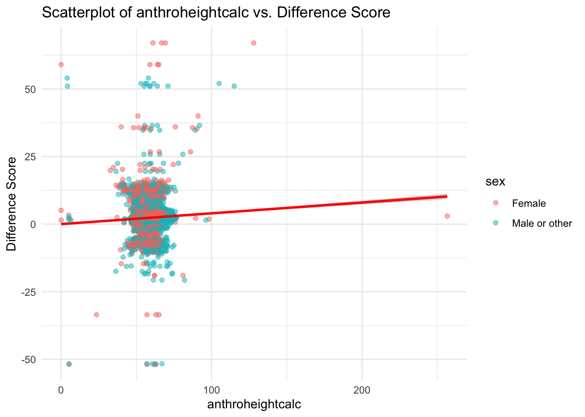

This example assesses growth in a subsample of ABCD participants from Baseline (T0) to the 1-Year follow-up (T1), using height as a representative metric. The analysis is conducted in two primary steps: 1) a difference score is calculated between baseline and Year_1 height measurements for each participant; 2) a one-sample t-test is used to test whether the difference score is statistically different than a null hypothesis of zero change. Finally, a visual inspection is further conducted via a scatterplot to graphically represent the relationship between participant’s height at Baseline and Year_1. The ensuing analysis and interpretations are detailed in the subsequent sections.
This code installs the r packages necessary for this example, if they are not already installed
Code
# Create a list of required packagespackages_required <-c("tidyverse","rstatix","DT")# Check which packages are not installed and install thempackages_to_install <-setdiff(packages_required, rownames(installed.packages()))if (length(packages_to_install) >0) {install.packages(packages_to_install)}# Load the required packageslapply(packages_required, library, character.only =TRUE)
This code loads the r libraries necessary for this example
Code
library(tidyverse) # Collection of R packages for data sciencelibrary(rstatix) # Pipe-friendly framework for basic statistical testslibrary(DT) # Rendering interactive data tables
This code reads in and shows the data to be used in the current example
Code
# Set the data pathsdata_path_1 <-"/Users/shawes/ABCD/data/rds/abcd_5.0_rds/demo5.0.rds"data_path_2 <-"/Users/shawes/ABCD/data/rds/abcd_5.0_rds/core-rds-5.0/non-imaging_excluding_nt_5.0.rds"# Read the datadata_demographics <-readRDS(data_path_1)data_nonimaging <-readRDS(data_path_2)# Subset the nonimaging data to include desired variablesselected_vars <-c("src_subject_id", "eventname", "nihtbx_totalcomp_fc", "anthroweightcalc", "anthroheightcalc")subset_data <- data_nonimaging[, selected_vars]library(dplyr)# # Merge the datasets on 'src_subject_id' and 'eventname'merged_data <- data_demographics %>%full_join(subset_data, by =c("src_subject_id", "eventname"))# Inspect the merged data structurestr(merged_data)# Define event names to be retained in the analysis and convert variables to appropriate data typeseventnames_to_include <-c("baseline_year_1_arm_1","1_year_follow_up_y_arm_1","2_year_follow_up_y_arm_1","3_year_follow_up_y_arm_1","4_year_follow_up_y_arm_1")df <- merged_data %>%filter(eventname %in% eventnames_to_include) %>%mutate(src_subject_id =as.factor(src_subject_id),eventname =factor(eventname, levels = eventnames_to_include, ordered =TRUE),age =as.numeric(age),sex =as.factor(sex),race.4level =as.factor(race.4level),hisp =as.factor(hisp),high.educ.bl =as.factor(high.educ.bl),household.income.bl =as.factor(household.income.bl),acs_raked_propensity_score =as.numeric(acs_raked_propensity_score),rel_family_id.bl =as.factor(rel_family_id.bl),site_id_l =as.factor(site_id_l),nihtbx_totalcomp_fc =as.numeric(nihtbx_totalcomp_fc),anthroweightcalc =as.numeric(anthroweightcalc),anthroheightcalc =as.numeric(anthroheightcalc) ) %>%# Exclude cases from unused assessment wavesfilter(!is.na(eventname))
This code creates a descriptives table
Code
# Define a function to compute descriptivescompute_descriptives <-function(data, event_name) {# For factor variables sex_desc <-paste0(table(data$sex), " (", round(100*prop.table(table(data$sex)), 1), "%)") race_desc <-paste0(table(data$race.4level), " (", round(100*prop.table(table(data$race.4level)), 1), "%)")# For numeric variables age_desc <-paste0(round(mean(data$age, na.rm =TRUE), 2), " (", round(sd(data$age, na.rm =TRUE), 2), ")") weight_desc <-paste0(round(mean(data$anthroweightcalc, na.rm =TRUE), 2), " (", round(sd(data$anthroweightcalc, na.rm =TRUE), 2), ")") height_desc <-paste0(round(mean(data$anthroheightcalc, na.rm =TRUE), 2), " (", round(sd(data$anthroheightcalc, na.rm =TRUE), 2), ")")# Combine into a data frame desc_df <-data.frame(Variable =c("Sex - Female", "Sex - Male or other", "Race - Asian", "Race - Black", "Race - Other/Mixed", "Race - White", "Age", "Weight", "Height"),Value =c(sex_desc, race_desc, age_desc, weight_desc, height_desc) )# Rename the Value column based on event namecolnames(desc_df)[2] <- event_namereturn(desc_df)}# Compute descriptives for each eventbaseline_desc <-compute_descriptives(subset(df, eventname =="baseline_year_1_arm_1"), "baseline_year_1_arm_1")one_year_desc <-compute_descriptives(subset(df, eventname =="1_year_follow_up_y_arm_1"), "1_year_follow_up_y_arm_1")two_year_desc <-compute_descriptives(subset(df, eventname =="2_year_follow_up_y_arm_1"), "2_year_follow_up_y_arm_1")three_year_desc <-compute_descriptives(subset(df, eventname =="3_year_follow_up_y_arm_1"), "3_year_follow_up_y_arm_1")# Join all data frames side-by-sidefinal_table <- baseline_desc %>%left_join(one_year_desc, by ="Variable") %>%left_join(two_year_desc, by ="Variable") %>%left_join(three_year_desc, by ="Variable")# Adjust for the required formatfinal_table[1:6, 3:5] <-NA# Round numeric values to two decimal placesnumeric_cols <-sapply(final_table, is.numeric)final_table[numeric_cols] <-lapply(final_table[numeric_cols], round, 2)# Create heading rows with the same columns as final_tableheading_rows <-data.frame(Variable =c("Sex", "Race"),baseline_year_1_arm_1 =NA_real_,`1_year_follow_up_y_arm_1`=NA_real_,`2_year_follow_up_y_arm_1`=NA_real_,`3_year_follow_up_y_arm_1`=NA_real_)# Set column names of heading_rows to match final_tablecolnames(heading_rows) <-colnames(final_table)# Introduce group labels and adjust the "Variable" columnfinal_table <-rbind( heading_rows[1,], final_table[1:2,], heading_rows[2,], final_table[3:6,], final_table[7:9,] )# Update the Variable column to remove redundant factor variable namefinal_table$Variable <-gsub("Sex - ", "", final_table$Variable)final_table$Variable <-gsub("Race - ", "", final_table$Variable)final_table$Variable[final_table$Variable =="Male or other"] <-"Male"# Add non-breaking spaces for increased indentationfinal_table$Variable[final_table$Variable %in%c("Female", "Male", "Asian", "Black", "Other/Mixed", "White")] <-paste0(rep(" ", 6), final_table$Variable[final_table$Variable %in%c("Female", "Male", "Asian", "Black", "Other/Mixed", "White")])# Update column headerscolnames(final_table)[2:5] <-c("Baseline", "Year 1", "Year 2", "Year 3")# Display the table interactively without row names, with updated column headers, and with HTML entities rendereddatatable(final_table, colnames =c("", "Baseline", "Year 1", "Year 2", "Year 3"),options =list(pageLength =nrow(final_table), autoWidth =TRUE),rownames =FALSE, escape =FALSE,caption ="Descriptives Table") # Add table title
The code snippet below tells R to compute a difference score by subtracting each participant’s height at T1 from their height at T0. Relevant summary statistics are also provided.
STEP 1: Compute Difference Score
Code
# Define the function to compute difference scores for a given variable and provide a summary# Function to compute difference scores for a given variable and provide a summarycompute_difference_and_summary <-function(df, variable_name) {# Define the event names of interest baseline_event <-"baseline_year_1_arm_1" followup_event <-"1_year_follow_up_y_arm_1"# Compute the difference between Baseline and Year 1 data for the given variable diff_data <- df %>%filter(eventname %in%c(baseline_event, followup_event)) %>%# Filter for specific event namesselect(src_subject_id, eventname, all_of(variable_name)) %>%# Select required columnsspread(eventname, variable_name) %>%# Convert data from long to wide formatmutate(diff =get(followup_event) -get(baseline_event)) %>%# Compute difference between the two time pointsdrop_na(diff) # Exclude rows with NA in the computed difference# Summarize the computed difference scores diff_summary <-summary(diff_data$diff)# Return the difference data and its summarylist(data = diff_data, summary = diff_summary)}# List of variables for which difference scores are to be computedvariables_of_interest <-c("anthroheightcalc")# Compute and store difference scores and summaries for each variable in a listdifference_and_summary_list <-lapply(variables_of_interest, function(var) {compute_difference_and_summary(df, var)})# Extract the difference data for the 'anthroheightcalc' variableheight_diff_data <- difference_and_summary_list[[1]]$data# Merge the 'diff' column back to the main df using 'src_subject_id' as the keydf <-left_join(df, height_diff_data %>%select(src_subject_id, diff), by ="src_subject_id")
Descriptive Statistics for the Difference Score
Code
# Compute statistical summaries for the difference score variablelapply(difference_and_summary_list, function(item) {print(item$summary)})
Min. 1st Qu. Median Mean 3rd Qu. Max.
-51.9 1.8 2.2 2.4 3.0 67.0
[[1]]
Min. 1st Qu. Median Mean 3rd Qu. Max.
-51.9 1.8 2.2 2.4 3.0 67.0
This summary of the difference score variable indicates that the differences range from a decrease of -51.875 units to an increase of 67 units. The median difference is 2.25 units, and the average difference is approximately 2.3660611 units. There are 0 missing values in this difference score dataset.
Descriptive Statistics for the Height Variable
Code
## Summary statistics# Compute summary statistics for Height by eventnamesummary <- df %>%group_by(eventname) %>%get_summary_stats(anthroheightcalc, type ="mean_sd")data.frame(summary)
The summary statistics provide insights into the Height variable across different eventname categories. At baseline, the average height is approximately 55.241 units with a standard deviation of 3.331. Over the years, there’s a noticeable increase in average height: by the first year, it’s about 57.595 units, and it continues to rise, reaching approximately 64.694 units by the fourth year. The standard deviation remains relatively consistent over the years, suggesting similar variability in height measurements across these time points.
A one-sample t-test is computed to examine whether the average difference score is different than zero (indicating change).
STEP 2: Conduct t-test on Difference Score
Code
# Extract the difference scores for height from the computed listdiff_data <- difference_and_summary_list[[1]]$data$diff# Perform a one-sample t-test on the difference scores for heighttest_result <-t.test(diff_data, mu =0, na.rm =TRUE)test_result
One Sample t-test
data: diff_data
t = 99, df = 11135, p-value <2e-16
alternative hypothesis: true mean is not equal to 0
95 percent confidence interval:
2.32 2.41
sample estimates:
mean of x
2.37
This one-sample t-test evaluates whether the average difference score deviates significantly from 0. The model output provides:
a t-statistic of 98.8615605;
degrees of freedom of 1.1135^{4};
a p-value of 0;
a mean estimate of 2.3660611;
95% confidence intervals from 2.3191481 to 2.4129742.
95% confidence intervals from 2.319 to 2.413.
With a t-value of 98.8615605 and a p-value of 0, we can determine the significance of the difference. The average difference score across the sample is approximately 2.37. Furthermore, we can be 95% confident that the true mean difference score in the population lies between approximately 2.32 and 2.41. This indicates the degree to which there’s a change in height from Baseline to Year 1.
testing
# Filter data for Baselinebaseline_data <- df %>%filter(eventname =="Baseline")# Filter data for Year_1 and join with Baseline datajoined_data <- baseline_data %>%left_join(df %>%filter(eventname =="Year_1"), by ="src_subject_id", suffix =c("_baseline", "_year1"))# Create scatterplotscatterplot <-ggplot(df, aes(x = anthroheightcalc, y = diff)) +geom_point(aes(color = sex), alpha =0.5) +# Setting alpha to ensure points are visiblegeom_smooth(method ="lm", color ="red") +# Adding linear regression linelabs(title ="Scatterplot of anthroheightcalc vs. Difference Score",x ="anthroheightcalc",y ="Difference Score" ) +theme_minimal()scatterplot

The scatterplot visually depicts the relationship between individuals’ heights at baseline and their heights at Year_1. Each point on the plot represents an individual, with their baseline height plotted on the x-axis and their Year_1 height on the y-axis. A noticeable positive linear trend can be observed, as highlighted by the blue regression line, indicating that those who were taller at baseline generally remained taller at Year_1. The strength and direction of this relationship can be further quantified with correlation coefficients, but visually, the data suggests a strong positive association between baseline and Year_1 heights.
In the study sample, the average height at baseline was approximately 55.241 units with a standard deviation of 3.331, which showed a noticeable increase to an average of 57.595 units by Year_1. A one-sample t-test was conducted to determine if the mean difference in height from baseline to Year_1 significantly deviated from zero. The results indicated a statistically significant increase with a mean difference of approximately 2.37 units (2.32 to 2.41), t(1.1135^{4}) = 98.862, p < 0. Further, a scatterplot visualizing the relationship between baseline and Year_1 heights showed a strong positive linear trend. This suggests that participants who were taller at baseline generally remained taller at Year_1, reaffirming the consistent growth trend observed in the data.
Source Code
---title: "Difference Scores: Paired Samples T-test"author: "Biostatistics Working Group"---# Paired Samples T-test {.unnumbered}## Overview<p>This example assesses growth in a subsample of ABCD participants from Baseline (T0) to the 1-Year follow-up (T1), using height as a representative metric. The analysis is conducted in two primary steps: 1) a difference score is calculated between baseline and Year_1 height measurements for each participant; 2) a one-sample t-test is used to test whether the difference score is statistically different than a null hypothesis of zero change. Finally, a visual inspection is further conducted via a scatterplot to graphically represent the relationship between participant's height at Baseline and Year_1. The ensuing analysis and interpretations are detailed in the subsequent sections.</p>## Preliminary Setup::: panel-tabset### Install Packages {.tabset .tabset-fade .tabset-pills}::: blue> **This code installs the r packages necessary for this example, if> they are not already installed**```{r pckg-install}#| echo: TRUE#| messages: FALSE#| warning: FALSE#| output: FALSE# Create a list of required packagespackages_required <-c("tidyverse","rstatix","DT")# Check which packages are not installed and install thempackages_to_install <-setdiff(packages_required, rownames(installed.packages()))if (length(packages_to_install) >0) {install.packages(packages_to_install)}# Load the required packageslapply(packages_required, library, character.only =TRUE)```:::### Load Packages::: blue**This code loads the r libraries necessary for this example**```{r lib-load}#| echo: TRUE#| messages: FALSE#| warning: FALSE#| output: FALSElibrary(tidyverse) # Collection of R packages for data sciencelibrary(rstatix) # Pipe-friendly framework for basic statistical testslibrary(DT) # Rendering interactive data tables```:::### Config Options::: blue**This code configures knitr code chunk options**```{r config}#| echo: TRUE#| messages: FALSE#| warning: FALSE#| output: FALSEknitr::opts_chunk$set(echo = T, message=F, warning=F, error=F, comment=NA, cache=T, code_folding=T,R.options=list(width=220, digits =3),fig.align='center', out.width='75%', fig.asp=.75)```::::::## Descriptives Overview::: panel-tabset### Read and View Data {.tabset .tabset-fade .tabset-pills}::: blue**This code reads in and shows the data to be used in the currentexample**```{r read-data}#| echo: TRUE#| messages: FALSE#| warning: FALSE#| output: FALSE#| cache: FALSE# Set the data pathsdata_path_1 <-"/Users/shawes/ABCD/data/rds/abcd_5.0_rds/demo5.0.rds"data_path_2 <-"/Users/shawes/ABCD/data/rds/abcd_5.0_rds/core-rds-5.0/non-imaging_excluding_nt_5.0.rds"# Read the datadata_demographics <-readRDS(data_path_1)data_nonimaging <-readRDS(data_path_2)# Subset the nonimaging data to include desired variablesselected_vars <-c("src_subject_id", "eventname", "nihtbx_totalcomp_fc", "anthroweightcalc", "anthroheightcalc")subset_data <- data_nonimaging[, selected_vars]library(dplyr)# # Merge the datasets on 'src_subject_id' and 'eventname'merged_data <- data_demographics %>%full_join(subset_data, by =c("src_subject_id", "eventname"))# Inspect the merged data structurestr(merged_data)# Define event names to be retained in the analysis and convert variables to appropriate data typeseventnames_to_include <-c("baseline_year_1_arm_1","1_year_follow_up_y_arm_1","2_year_follow_up_y_arm_1","3_year_follow_up_y_arm_1","4_year_follow_up_y_arm_1")df <- merged_data %>%filter(eventname %in% eventnames_to_include) %>%mutate(src_subject_id =as.factor(src_subject_id),eventname =factor(eventname, levels = eventnames_to_include, ordered =TRUE),age =as.numeric(age),sex =as.factor(sex),race.4level =as.factor(race.4level),hisp =as.factor(hisp),high.educ.bl =as.factor(high.educ.bl),household.income.bl =as.factor(household.income.bl),acs_raked_propensity_score =as.numeric(acs_raked_propensity_score),rel_family_id.bl =as.factor(rel_family_id.bl),site_id_l =as.factor(site_id_l),nihtbx_totalcomp_fc =as.numeric(nihtbx_totalcomp_fc),anthroweightcalc =as.numeric(anthroweightcalc),anthroheightcalc =as.numeric(anthroheightcalc) ) %>%# Exclude cases from unused assessment wavesfilter(!is.na(eventname))```:::### Descriptives::: blue**This code creates a descriptives table**```{r descriptives}#| echo: TRUE#| messages: FALSE#| warning: FALSE# Define a function to compute descriptivescompute_descriptives <-function(data, event_name) {# For factor variables sex_desc <-paste0(table(data$sex), " (", round(100*prop.table(table(data$sex)), 1), "%)") race_desc <-paste0(table(data$race.4level), " (", round(100*prop.table(table(data$race.4level)), 1), "%)")# For numeric variables age_desc <-paste0(round(mean(data$age, na.rm =TRUE), 2), " (", round(sd(data$age, na.rm =TRUE), 2), ")") weight_desc <-paste0(round(mean(data$anthroweightcalc, na.rm =TRUE), 2), " (", round(sd(data$anthroweightcalc, na.rm =TRUE), 2), ")") height_desc <-paste0(round(mean(data$anthroheightcalc, na.rm =TRUE), 2), " (", round(sd(data$anthroheightcalc, na.rm =TRUE), 2), ")")# Combine into a data frame desc_df <-data.frame(Variable =c("Sex - Female", "Sex - Male or other", "Race - Asian", "Race - Black", "Race - Other/Mixed", "Race - White", "Age", "Weight", "Height"),Value =c(sex_desc, race_desc, age_desc, weight_desc, height_desc) )# Rename the Value column based on event namecolnames(desc_df)[2] <- event_namereturn(desc_df)}# Compute descriptives for each eventbaseline_desc <-compute_descriptives(subset(df, eventname =="baseline_year_1_arm_1"), "baseline_year_1_arm_1")one_year_desc <-compute_descriptives(subset(df, eventname =="1_year_follow_up_y_arm_1"), "1_year_follow_up_y_arm_1")two_year_desc <-compute_descriptives(subset(df, eventname =="2_year_follow_up_y_arm_1"), "2_year_follow_up_y_arm_1")three_year_desc <-compute_descriptives(subset(df, eventname =="3_year_follow_up_y_arm_1"), "3_year_follow_up_y_arm_1")# Join all data frames side-by-sidefinal_table <- baseline_desc %>%left_join(one_year_desc, by ="Variable") %>%left_join(two_year_desc, by ="Variable") %>%left_join(three_year_desc, by ="Variable")# Adjust for the required formatfinal_table[1:6, 3:5] <-NA# Round numeric values to two decimal placesnumeric_cols <-sapply(final_table, is.numeric)final_table[numeric_cols] <-lapply(final_table[numeric_cols], round, 2)# Create heading rows with the same columns as final_tableheading_rows <-data.frame(Variable =c("Sex", "Race"),baseline_year_1_arm_1 =NA_real_,`1_year_follow_up_y_arm_1`=NA_real_,`2_year_follow_up_y_arm_1`=NA_real_,`3_year_follow_up_y_arm_1`=NA_real_)# Set column names of heading_rows to match final_tablecolnames(heading_rows) <-colnames(final_table)# Introduce group labels and adjust the "Variable" columnfinal_table <-rbind( heading_rows[1,], final_table[1:2,], heading_rows[2,], final_table[3:6,], final_table[7:9,] )# Update the Variable column to remove redundant factor variable namefinal_table$Variable <-gsub("Sex - ", "", final_table$Variable)final_table$Variable <-gsub("Race - ", "", final_table$Variable)final_table$Variable[final_table$Variable =="Male or other"] <-"Male"# Add non-breaking spaces for increased indentationfinal_table$Variable[final_table$Variable %in%c("Female", "Male", "Asian", "Black", "Other/Mixed", "White")] <-paste0(rep(" ", 6), final_table$Variable[final_table$Variable %in%c("Female", "Male", "Asian", "Black", "Other/Mixed", "White")])# Update column headerscolnames(final_table)[2:5] <-c("Baseline", "Year 1", "Year 2", "Year 3")# Display the table interactively without row names, with updated column headers, and with HTML entities rendereddatatable(final_table, colnames =c("", "Baseline", "Year 1", "Year 2", "Year 3"),options =list(pageLength =nrow(final_table), autoWidth =TRUE),rownames =FALSE, escape =FALSE,caption ="Descriptives Table") # Add table title```::::::## Results::: panel-tabset### Build Model: Step I {.tabset .tabset-fade .tabset-pills}::: blueThe code snippet below tells R to compute a difference score by subtracting each participant's height at T1 from their height at T0. Relevant summary statistics are also provided.**STEP 1: Compute Difference Score**```{r build-model-ttest-1}#| message: FALSE#| warning: FALSE#| echo: TRUE#| class.source: 'fold-hide'# Define the function to compute difference scores for a given variable and provide a summary# Function to compute difference scores for a given variable and provide a summarycompute_difference_and_summary <-function(df, variable_name) {# Define the event names of interest baseline_event <-"baseline_year_1_arm_1" followup_event <-"1_year_follow_up_y_arm_1"# Compute the difference between Baseline and Year 1 data for the given variable diff_data <- df %>%filter(eventname %in%c(baseline_event, followup_event)) %>%# Filter for specific event namesselect(src_subject_id, eventname, all_of(variable_name)) %>%# Select required columnsspread(eventname, variable_name) %>%# Convert data from long to wide formatmutate(diff =get(followup_event) -get(baseline_event)) %>%# Compute difference between the two time pointsdrop_na(diff) # Exclude rows with NA in the computed difference# Summarize the computed difference scores diff_summary <-summary(diff_data$diff)# Return the difference data and its summarylist(data = diff_data, summary = diff_summary)}# List of variables for which difference scores are to be computedvariables_of_interest <-c("anthroheightcalc")# Compute and store difference scores and summaries for each variable in a listdifference_and_summary_list <-lapply(variables_of_interest, function(var) {compute_difference_and_summary(df, var)})# Extract the difference data for the 'anthroheightcalc' variableheight_diff_data <- difference_and_summary_list[[1]]$data# Merge the 'diff' column back to the main df using 'src_subject_id' as the keydf <-left_join(df, height_diff_data %>%select(src_subject_id, diff), by ="src_subject_id")```**Descriptive Statistics for the Difference Score**```{r model-checking}# Compute statistical summaries for the difference score variablelapply(difference_and_summary_list, function(item) {print(item$summary)})```This summary of the difference score variable indicates that the differences range from a decrease of `r min(height_diff_data$diff, na.rm = TRUE)` units to an increase of `r max(height_diff_data$diff, na.rm = TRUE)` units. The median difference is `r median(height_diff_data$diff, na.rm = TRUE)` units, and the average difference is approximately `r mean(height_diff_data$diff, digits = 2, na.rm = TRUE)` units. There are `r sum(is.na(height_diff_data$diff))` missing values in this difference score dataset.**Descriptive Statistics for the Height Variable**```{r}## Summary statistics# Compute summary statistics for Height by eventnamesummary <- df %>%group_by(eventname) %>%get_summary_stats(anthroheightcalc, type ="mean_sd")data.frame(summary)```The summary statistics provide insights into the Height variable across different `eventname` categories. At baseline, the average height is approximately `r summary$mean[summary$eventname == "baseline_year_1_arm_1"]` units with a standard deviation of `r summary$sd[summary$eventname == "baseline_year_1_arm_1"]`. Over the years, there’s a noticeable increase in average height: by the first year, it’s about `r summary$mean[summary$eventname == "1_year_follow_up_y_arm_1"]` units, and it continues to rise, reaching approximately `r summary$mean[summary$eventname == "4_year_follow_up_y_arm_1"]` units by the fourth year. The standard deviation remains relatively consistent over the years, suggesting similar variability in height measurements across these time points.:::### Build Model: Step 2 {.tabset .tabset-fade .tabset-pills}::: blueA one-sample t-test is computed to examine whether the average difference score is different than zero (indicating change).**STEP 2: Conduct t-test on Difference Score**```{r build-model-ttest-2}#| class.source: 'fold-hide'#| message: FALSE#| warning: FALSE#| echo: TRUE# Extract the difference scores for height from the computed listdiff_data <- difference_and_summary_list[[1]]$data$diff# Perform a one-sample t-test on the difference scores for heighttest_result <-t.test(diff_data, mu =0, na.rm =TRUE)test_result```This one-sample t-test evaluates whether the average difference score deviates significantly from 0. The model output provides:i. a t-statistic of `r test_result$statistic`;ii. degrees of freedom of `r test_result$parameter`;iii. a p-value of `r test_result$p.value`;iv. a mean estimate of `r test_result$estimate["mean of x"]`;v. 95% confidence intervals from `r test_result$conf.int[1]` to `r test_result$conf.int[2]`.v. 95% confidence intervals from `r round(test_result$conf.int[1], 3)` to `r round(test_result$conf.int[2], 3)`.With a t-value of `r test_result$statistic` and a p-value of `r test_result$p.value`, we can determine the significance of the difference. The average difference score across the sample is approximately `r round(test_result$estimate["mean of x"], 2)`. Furthermore, we can be 95% confident that the true mean difference score in the population lies between approximately `r round(test_result$conf.int[1], 2)` and `r round(test_result$conf.int[2], 2)`. This indicates the degree to which there's a change in height from Baseline to Year 1.:::### Model Plots::: blue```{r scatterplot}#| echo: TRUE#| messages: FALSE#| warning: FALSE#| code-summary: testing# Filter data for Baselinebaseline_data <- df %>%filter(eventname =="Baseline")# Filter data for Year_1 and join with Baseline datajoined_data <- baseline_data %>%left_join(df %>%filter(eventname =="Year_1"), by ="src_subject_id", suffix =c("_baseline", "_year1"))# Create scatterplotscatterplot <-ggplot(df, aes(x = anthroheightcalc, y = diff)) +geom_point(aes(color = sex), alpha =0.5) +# Setting alpha to ensure points are visiblegeom_smooth(method ="lm", color ="red") +# Adding linear regression linelabs(title ="Scatterplot of anthroheightcalc vs. Difference Score",x ="anthroheightcalc",y ="Difference Score" ) +theme_minimal()scatterplot```The scatterplot visually depicts the relationship between individuals' heights at baseline and their heights at Year_1. Each point on the plot represents an individual, with their baseline height plotted on the x-axis and their Year_1 height on the y-axis. A noticeable positive linear trend can be observed, as highlighted by the blue regression line, indicating that those who were taller at baseline generally remained taller at Year_1. The strength and direction of this relationship can be further quantified with correlation coefficients, but visually, the data suggests a strong positive association between baseline and Year_1 heights.::::::## Wrapping Up::: panel-tabset### Write-up {.tabset .tabset-fade .tabset-pills}::: blueIn the study sample, the average height at baseline was approximately `r summary$mean[summary$eventname == "baseline_year_1_arm_1"]` units with a standard deviation of `r summary$sd[summary$eventname == "baseline_year_1_arm_1"]`, which showed a noticeable increase to an average of `r summary$mean[summary$eventname == "1_year_follow_up_y_arm_1"]` units by Year_1. A one-sample t-test was conducted to determine if the mean difference in height from baseline to Year_1 significantly deviated from zero. The results indicated a statistically significant increase with a mean difference of approximately `r round(test_result$estimate, 2)` units (`r round(test_result$conf.int[1], 2)` to `r round(test_result$conf.int[2], 2)`), t(`r test_result$parameter`) = `r round(test_result$statistic, 3)`, p < `r test_result$p.value`. Further, a scatterplot visualizing the relationship between baseline and Year_1 heights showed a strong positive linear trend. This suggests that participants who were taller at baseline generally remained taller at Year_1, reaffirming the consistent growth trend observed in the data.::::::